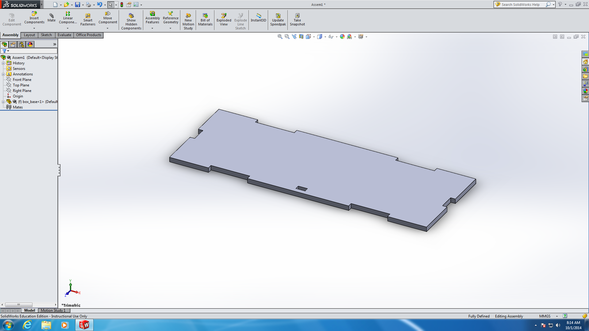

A Project Storage Box
Table of Contents
1 Making an assembley using mates.
Learn It
- In SolidWorks, an assembly is a collection of 3D parts.
- Just like sketches, assemblies need to be fully defined, so that the distances between parts are known by the software,
- To accomplish this we use
mates. - This is the assembly we're going to make.

Design It
- Open up SolidWorks.
- Create a new document.
- This time, we're going to choose an
Assembly

- Click on Browse and find the Base part you made in a previous lesson.

- If you struggle to find your parts, or they have not been made correctly, then you can use the ones linked here.
- Once the part has been imported, click in the view port to place the part.

- Next we need to insert the Box-Back into our assembley.
- Click on the
Insert Componentsbutton in the tool bar and then select your Box-Back part.

- You can now move the part around and get an approximate position to place it. Don;t worry about being accurate here.

- Now we need to rotate the part into an approximation of it's correct orientation.
- Select the boxback part.

- Next
- Click on the
Move Componentbutton - Click on the
Rotate Componentoption from the contect menu.
- Click on the

- Now you can rotate the part into the correct orientation. Again, you don't need to be accurate here. Just position the piece so that the finger joints are pointing downwards.

- Now the process of mating can begin.
- Mating involves matching
facesthat arecoincidentwith each other. This can mean they are either touching each other (as if glued together) or perfectly inline with each other. Usually you'll need 3 mates to fully define the position of any part. This will lock the part on the X, Y and Z axis. - Select the inner face of the back of the box.

- Now change your view so that you can see the reverse side of the assembley and use the
SHIFT KEYto click and select the inner face of either of the finger joints on the base of the box.

- Now click the
Matebutton from the toolbar

- The software will default to a coincident relationship, so we can just click the green tick.

- That's one mate completed and two more to go.
- Select the lower face of one of the finger joints of the back of the box, and use the shift key to also select the lower face of the base.

- Now mate the two parts again.
- Lastly we need to select the matching faces of the finger joints of bothe the back and base part.

- Mate the parts and you should see that your assembley has been fully defined.

2 Mating a part independently
Badge It - Silver
- To earn the Silver Best Mate badge
- Import the front of the box.
- Mate it to the base so that your assembly is fully defined.
- Screen shot your assembly for your portfolio.
Badge It - Gold
- To earn the Gold Best Mate badge
- Import the side part of the box.
- Mate this part correctly and then import it again and mate it on the other side.
- You should now have a completed box that is missing a lid.
Badge It - Platinum
- To earn the Platinum Best Mate badge
- Import the remaining parts one at a time and mate them together to form a completed box.
- You might need your teacher's assistance to mate the lid parts to the box body.
- You should now have a completed box.